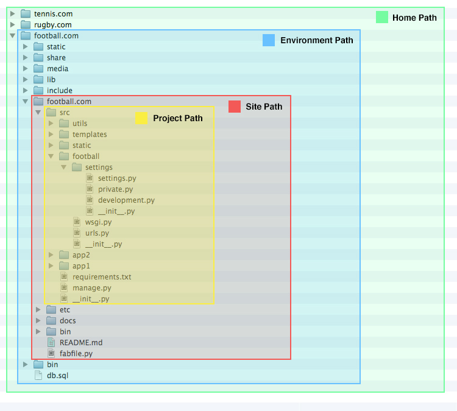

An Updated General Django Project (>= 1.5) Structure or Folder Layout
—
UPDATE 01/18: Since writing this blog post I've started using a great skeleton repo for new Django projects: django-cookie-cutter
In a previous post I discussed a sensible folder layout for deploying a new Django project. Since then, Django has updated the default project layout and I’ve also had some time to reflect and adjust my previous layout. Let’s have a look at a new and improved folder structure and layout for project using Django >= 1.5.
This post assumes that you are using ‘virtualenv’ (and ideally ‘virtualenvwrapper’ which I very much recommend) and Github. Furthermore, to make this concrete, we will assume that the following directory is in ~/Sites/.
So let’s first have a general overview of the suggested layout:

. # HOME PATH
|-- football.com # ENVIRONMENT PATH
| |-- bin
| |-- db.sql
| |-- football.com # SITE PATH
| | |-- README.md
| | |-- assets
| | |-- bin
| | |-- docs
| | |-- etc
| | |-- fabfile.py
| | `-- src # PROJECT PATH
| | |-- app1
| | | |-- __init__.py
| | | |-- admin.py
| | | |-- forms.py
| | | |-- models.py
| | | |-- tests.py
| | | `-- urls.py
| | |-- app2
| | | |-- __init__.py
| | | |-- admin.py
| | | |-- forms.py
| | | |-- models.py
| | | `-- urls.py
| | |-- football
| | | |-- __init__.py
| | | |-- settings
| | | | |-- __init__.py
| | | | |-- development.py
| | | | |-- private.py
| | | | |-- production.py
| | | | `-- settings.py
| | | |-- urls.py
| | | `-- wsgi.py
| | |-- manage.py
| | |-- requirements.txt
| | |-- static
| | |-- templates
| | `-- utils
| |-- include
| |-- lib
| |-- media
| |-- share
| `-- static
|-- rugby.com
`-- tennis.com
Server Files
The first question that needs to be asked when considering the project layout is: what needs to be checked into Git and what does not?
Files that are only relevant to the serving location or local environment should not be checked into Github as these files will vary between development, staging and production deployments and aren’t at the core of the project. These are things like log files, databases, files system caches, user uploaded media files etc. (While they shouldn’t be checked in to Github, they most likely should be backed up - particularly in the case of user uploaded media)
In the above image, both the home path and environment path represent these server files and are outside of the scope of Git and therefor not checked in.
Project Files
Now that we have identified our server files we can concentrate on those files relevant to the actual project.
Project files encompass everything relevant to your project and will be checked into Github. These are the site path and the project path in the above image. But there is a further question that needs to be asked: which files are specific to the Django project itself and which files are not?
When deploying your project, there are some files that aren’t necessarily related to the actual Django project but nonetheless are crucical for the project to work. These are things like configuration files, deployment scripts (fabric), documentation, PSDs etc. These non-django files are placed in the site path, while everything specifically related to Django is placed in the enclosed project path (In my previous post, all of these files were all placed together in a single folder which quickly became difficult to maintain.)
The Details
Now that a distinction has been made between the server files and the project files, we can go through each level in detail:
1. Home Path
~/Sites/
This is simply the directory where all sites are kept. I use ‘virtualenvwrapper’ so this directory is my WORKON_HOME. On your production server, this might be the ‘/srv/’ folder.
2. Environment Path
~/Sites/football.com/
This is your local python environment, i.e. your ‘virtualenv’. When using ‘virtualenvwrapper’, my environment is created via mkvirtualenv --no-site-packages football.com and I can easily switch to it using the workon football.com command. If I am using plain ‘virtualenv’, this folder is create by mkdir football.com followed by virtualenv football.com and activated by source football.com/bin/activate.
staticfolder : this is where Django’sstaticfilesapp collects and copies your projects static files. It corresponds to yourSTATIC_ROOTsettings.mediafolder : this is where uploads are saved by the application server. It’s yourMEDIA_ROOTsetting.db.sql: during development, this is where your sqlite3 database should go.bin,lib,share,src: these are all relevant to python and created by virtualenv. For example, when you usepip installit will place those installed libraries inlib/python2.7/site-packages/...
3. Site Path
~/Sites/football.com/football.com/
assets: holds any design files; PSDs, mockups etc.bin: any 3rd party binaries or scripts that are specific to the projectdocs: markdown files, sphinx documentation, text files etc.etc: holds all configuration files; apache, nginx, supervisor, uwsgi etclib: any custom libraries that aren’t necessarily Django or Python related.src: our Django project and Project Path
4. Project Path
~/Sites/football.com/football.com/src/
This folder is the heart of your site and encapsulates all of the code relevant to your Django project. It is the folder that is created if you run the django-admin.py startproject command. Its naming is not particularly important but I call it src to convene with the unix folder structure conventions. It’s important to remember that this folder needs to be added to your python path. If you are using virtualenvwrapper you can use the add2virtualenv command. If not you can add it manually
football: the documentation puts it best: “the inner (football)/ directory is the actual Python package for your project. Its name is the Python package name you’ll need to use to import anything inside it (e.g. mysite.urls).”. Essentially, this is the location for files that are relevant to the entire project but not a particular application.- You can use this folder to place other files that don’t fit in an app but are relevant to your overall project such as
sitemaps.py,humans.txt,robots.txt, extra template tags (as long as you includefootballas an app) etc. In my previous post, this required a separatecommonorcoreapp. football/settings: Although it’s outside the scope of this post, splitting your settings into separate files is a good idea.
- You can use this folder to place other files that don’t fit in an app but are relevant to your overall project such as
appX: these are your custom applications. In my previous post, I placed my applications in a separate folder for clarity. There are two ways to achieve this but I have since found that it leads to complications and a conflict between your folder structure and python path so I now just leave all apps sitting alongside one and other. This works well as this folder is much cleaner now that server-level files have been moved up to the parent directory (site path) and django-level files have been moved into thefootballmodule.static: not to be confused with the static folder in the environment path, this static folder holds the files that you want collected by Django’scontrib.staticfilesapp. I prefer having a single folder in the project path as opposed to individual static folder in each application.utils: a useful folder if you have small functions and modules that don’t fit elsewhere (usually maths functions, string manipulation functions etc.)manage.py: this is simply a wrapper fordjango-admin.pythat sets the correct settings file path. For that reason, I prefer to set theDJANGO_SETTINGS_MODULEenvironment variables and make use ofdjango-admin.pydirectly.requirements.txt: a list of all installed python libraries generated bypip freeze. I generally usepip-tools. As mentioned in the previous post: “Pip is great, butpip-toolsis even better. It makes installing updating and dumping dependancies even easier.”
Extra Notes
Backup: previously I made sure all my source code was also in my Dropbox (symlinking the files to the appropriate virtualenv folder). I’ve since moved off Dropbox for backup (no encryption) and am now using Backblaze, so there is no need to do any symlinking.